Back to Nakanai '93 Contents Page
Back to Nakanai '93 Contents
Page
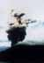 | The volcano at Cape Glosta letting off steam and ash. |
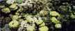 | The inshore reef at Hornbill Point was full of colourful life. |
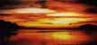 | Sunset over Hornbill Point. |
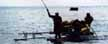 | Sagsag villagers ferry our lugage along the coast to Hornbill Point. |
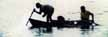 | Manuel and Napoleon, villagers from Sagsag, spear-fishing. |
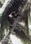 | Manuel climbing to get coconuts |
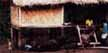 | Feeding time for the pigs in Sagsag village. |
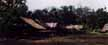 | Aimola Village |
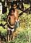 | Two children from Aimola village. |
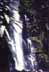 | One of the waterfalls upstream from our river camp, Mount Talawe. |
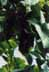 | A roosting spectacled bat. |
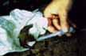 | Occasionally small bats became entangledin the mist nets. This one was exhausted so we revived it with sugar solution |
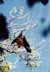 | A large fruit bat sunning itself. |
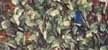 | Butterflies on the path at Wild Dog |
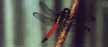 | A spectacular Dragonfly at Wild Dog |
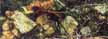 | Spider-hunting wasp living up to it's name. |